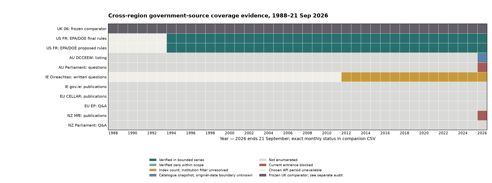

Cutoff: 21 September 2026. This is a metadata-enumeration tranche, not a merged international corpus and not a claim of historical completeness. The UK 06 database was read only and remains a frozen comparator: 248,035 documents (1,054 policy_paper + 1 guidance, 244,229 ministerial written answers, 2,751 written statements) and 3,668,275 text segments. Those genres are not interchangeable.

| Source and exact scope | Planned partitions | Reconciled evidence | Unit and limit |
|---|---|---|---|
| US Federal Register API: EPA/DOE agency hierarchy × final/proposed rules, 1994–cutoff | 132 year×agency×genre | 132/132; 33,560 stratum hits, 33,544 unique canonical document URLs | Rule/proposed-rule records, not all US policy or climate publications. 16 cross-agency duplicate hits. Two document-number collisions require URL+date identity. |
| Australian DCCEEW current all-publications listing | 83 pages | 83/83; 823 cards, 821 unique landing URLs; 821 cards have CMS-created date by cutoff | Landing pages, not unique full-text policy files. Earliest CMS timestamp 2003-09-08; original dates and attachment boundaries unknown. |
Irish Oireachtas /questions: qtype=written, all departments, Jul 2012–cutoff |
171 months | 171/171 successful monthly index queries; 684,809 indexed questions; 19 months with verified index zero | Question-index counts only. Annual API counts cap at 10,000, so monthly sub-10,000 counts were used. No API department filter; no full record/answer enumeration. |
All response bodies and per-request URL, final URL, status, timestamp, MIME type and SHA-256 are in evidence/; filters and counts are in the CSVs. The US selected series begins in the API in 1994; 1988–1993 are not supported by that route, not years with no US government material. The Australian 83-page snapshot was observed on 23 September 2026 and includes two cards after the research cutoff; its CMS timestamps must not be presented as original publication dates. Irish zero months are zeros for the all-department written-question index, not for government answers or the target environmental departments.
EU: CELLAR provides an official Work–Expression–Manifestation route, but institutional and genre filters have not been frozen or enumerated. The European Parliament API yielded one original question Work in RDF/XML; a question is not a Commission/Council answer, and the sample cannot be turned into a count. Ireland's gov.ie department publications entrance is verified but not enumerated. New Zealand's MfE publications returned an HTTP-200 challenge page, not publication data; Parliament's written-question entrance is verified but not enumerated. The current Australian House questions entrance returned HTTP 403. No access control was bypassed and none of these were assigned a zero count.
The source register records exact institution filter fields/values, genre, stable or candidate ID, date precision, record boundary, dedup scheme, provenance tier, coverage completeness, record-boundary confidence and rights/access separately—there is no opaque authenticity score. The spot checks show an ordinary US rule, a Federal Register document-number collision (1995 95-24211 has different dated canonical pages), a single rule hit in both EPA and DOE strata, a duplicated Australian landing URL, an Irish MP question with a separate answer field, and an EP question Work. US canonical URL is the union key; the document_number alone is unsafe. AU page/file boundaries remain boundary_unknown. For EU, EN-language manifestations must not inflate Work counts. Question, answer and attachment are separate roles, even when an API wraps them together.
The identity status ledger records 18 exact metadata-hit duplicate groups, 0 verified mirrors, 2 near-duplicate relationship candidates, and 0 observed same-event/distinct-voice pairs in this bounded metadata tranche. “Zero observed” for the latter two verified classes is not evidence of absence in governments' output. The record-level identity examples preserve jurisdiction, institution, genre, ID, edition, original/portal dates, language, URL, content-hash availability and parent/original relationship. We collected no publication-file hashes; response-body SHA-256 values prove retrieval integrity, not document identity. A shared Paris Agreement event, same month, similar title or topic would not license collapsing country-specific policy voices. Unlinked cross-site resemblance remains a candidate, never an automatic deletion.
The source composition is not yet balanced for cross-region time-series comparison. US rulemaking is a narrower administrative genre, Australian cards are a current-department catalogue snapshot, Ireland's counts cover parliamentary questions with neither department nor chamber query restriction rather than government answers, and EU/NZ are not enumerated. Department succession, migration dates and historical completeness need series-specific checks before a common window is claimed. Germany/France and other non-English candidates remain language/comparability candidates, not members of this English-core denominator. Official discourse is evidence of an institution's position or wording, not a claim that its factual assertions are objectively true.
Use the verified US rule series as a bounded source-specific coverage candidate from 1994 to the cutoff. Do not combine its counts with the UK policy or ministerial-answer series. For AU, resolve original publication date, landing-page/file relationship and predecessor-department coverage before counting policy documents by year. For Ireland, retrieve bounded question/answer metadata and verify responder department and answer date; pre-July-2012 written replies require a separate archival route. Freeze EU CELLAR institutional/genre filters and EP answer-issuer filters before enumeration; resolve NZ/Australian parliamentary official access via ordinary alternative routes. None of these pending work items justifies an all-region coverage percentage now.
Companion files: monthly source status, US partition identity audit, deduplicated US records, overlap/collision ledger, and raw source CSVs in the parent directory. A count is supplied only with its source, filter, unit and denominator.